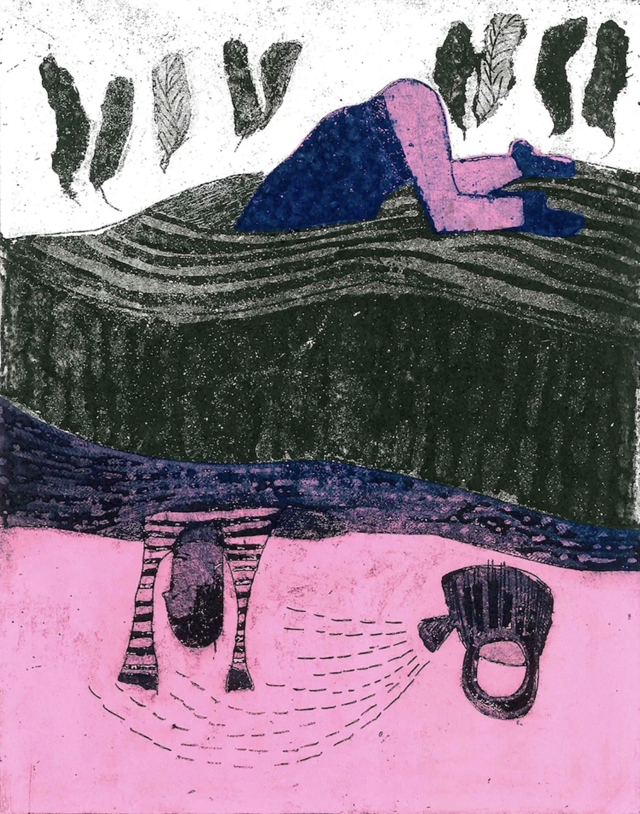
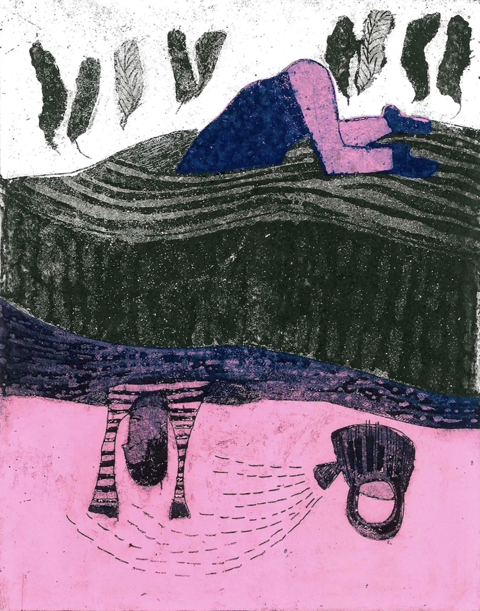
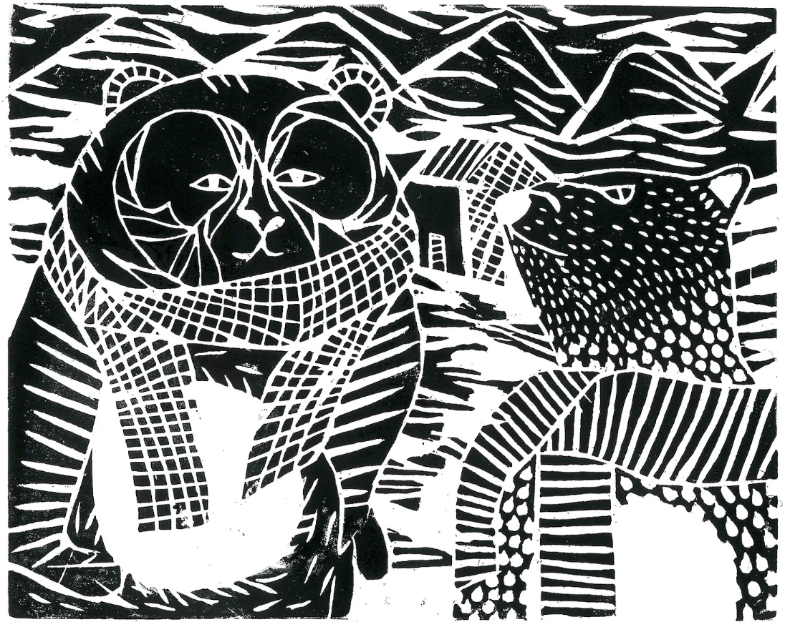
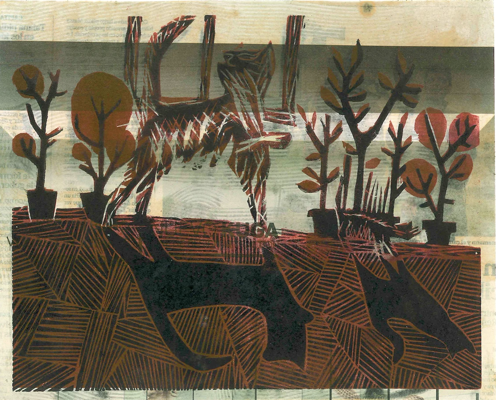
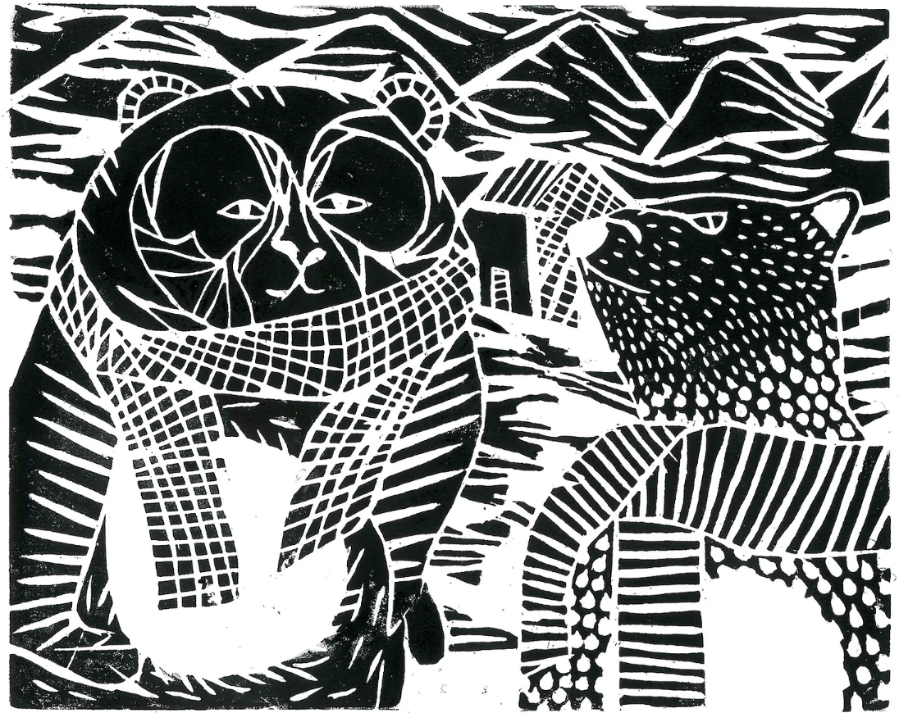
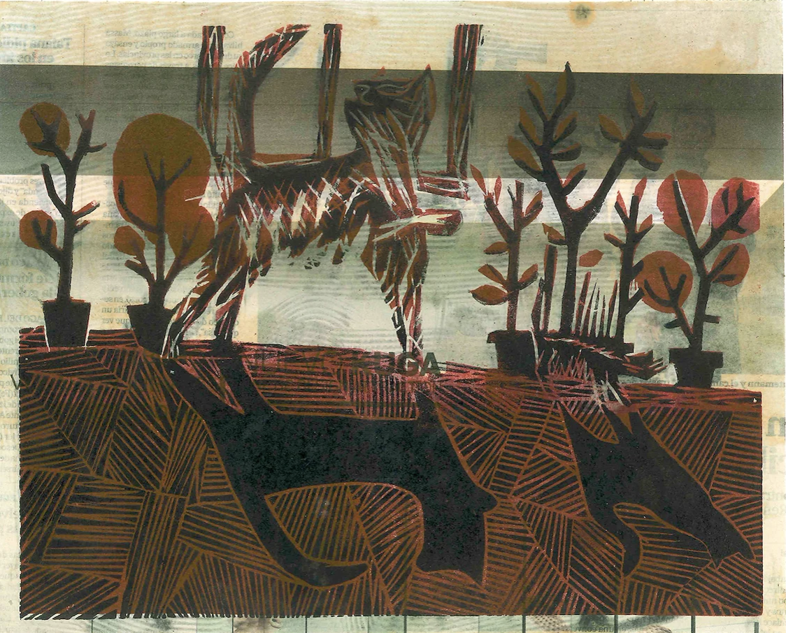
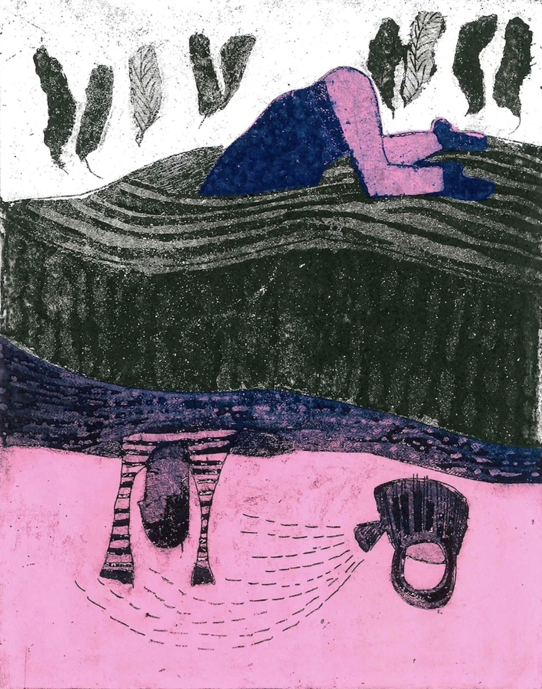
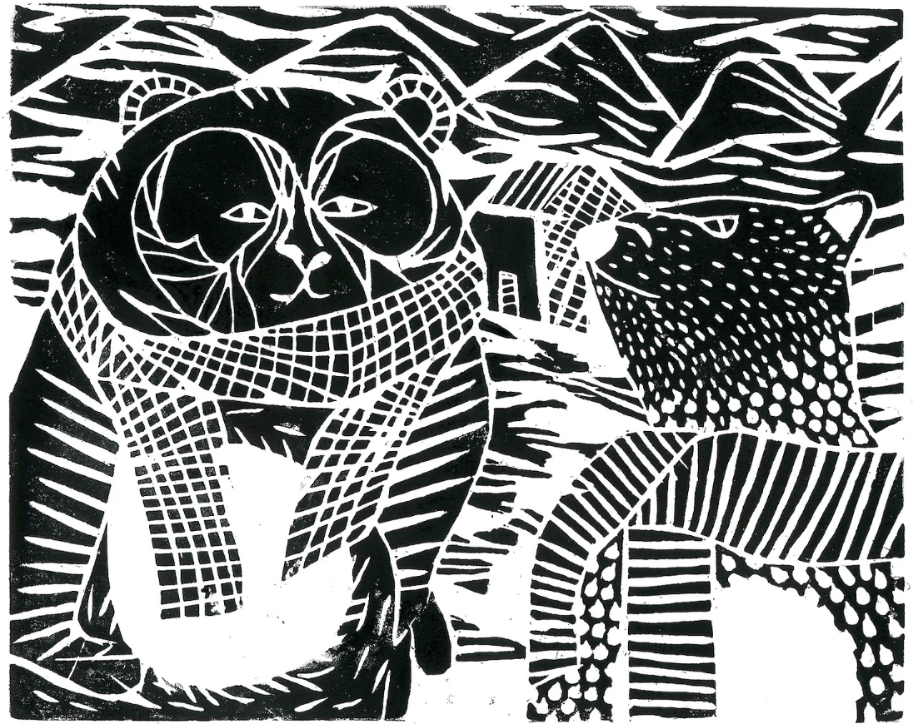
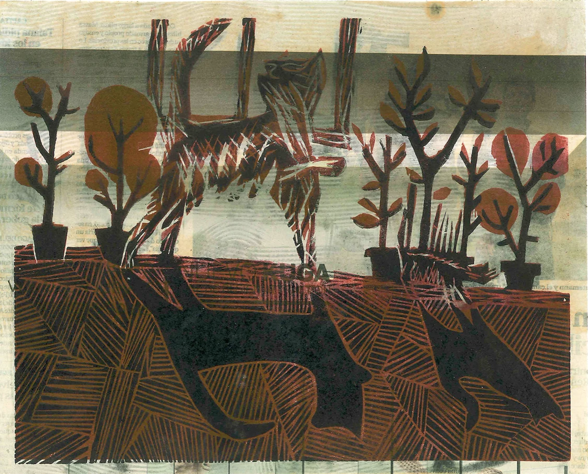

 




Fanzines y otros bemoles: los fanzines quizás son los modelos más creativos por no tener un formato predeterminado, sino un juego continúo, cómo en “Pira de emociones” donde arden los sentimientos y las vivencias, en ese caso propongo “quemarlas” de esta manera ritual para que no sigan carbonizando el cuerpo.
Y en “Sputnik " es un proyecto basado en el concepto de viajero/inmigrante que supera la realidad pasando a la ficción/abstracción.
El resto son ejercicios de dibujo, pintura y grabado.


